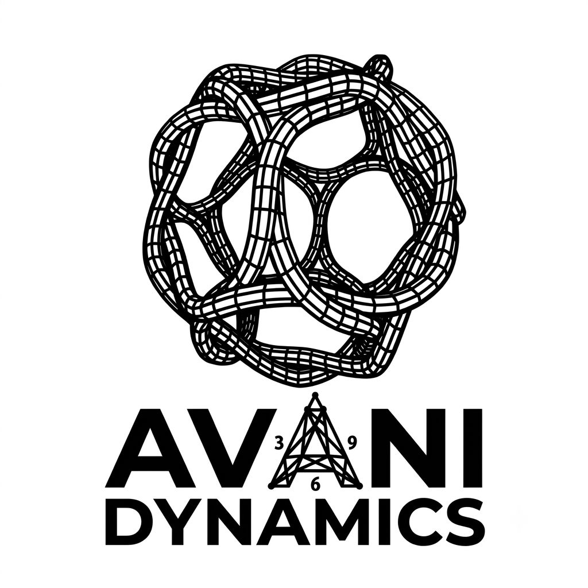

Startups
Two independent engineering ventures built around hardware, real-world problems, and hands-on development. Each with a distinct focus — one in robotics and automation, one in agricultural machinery.

Avani Dynamics
ENGINEERING IDEAS INTO REALITY.
Robotics, automation, and advanced engineering. Developing robotic systems, intelligent machines, and custom hardware through mechanical design, embedded systems, and control engineering.

Avani AgroTech
ENGINEERING A SMARTER WAY TO FARM.
Affordable electric-powered agricultural machinery for small-scale farmers. Reducing manual labour, improving field efficiency, and making modern farm equipment more accessible.
Avani Dynamics
ENGINEERING IDEAS INTO REALITY.
Avani Dynamics is an engineering venture focused on developing innovative robotic systems, intelligent machines, and custom engineering solutions. By combining mechanical design, embedded systems, electronics, and control engineering, the company transforms experimental concepts into functional hardware.
Engineering Across Disciplines
Robotics & Autonomous Systems
Robotic manipulators, mobile robots, autonomous navigation, and intelligent machine coordination.
Actuation & Mechanical Design
Custom actuators, gearboxes, transmission mechanisms, and innovative mechanical architectures.
Embedded Systems & Control
Custom electronics, microcontroller-based systems, motor control, and distributed computing.
Prototyping & R&D
CAD, rapid prototyping, hardware integration, and experimental validation.
From Concepts to Functional Machines
A robotic manipulator featuring fully 3D-printed structural components, custom compound planetary gearboxes, and distributed control using three RP2040 microcontrollers.
A reconfigurable robotics platform exploring autonomous coordination, modular docking, and collaborative robotic systems.
A robotic manipulator built from salvaged components using stepper motors and accessible electronics. Secured third place at Onfluence 2026.
Mobile robotics projects focused on embedded control, sensor integration, and autonomous navigation.
Design. Build. Test. Improve.
From initial concepts to functional prototypes, every project follows an iterative engineering process involving research, mechanical and electronic design, hardware development, and experimental testing.
Open-source development and technical documentation support knowledge sharing, collaboration, and accessible engineering.
Aaruthrun
Robotics and Automation Engineering student with a background in Mechatronics, focused on robotic manipulation, custom actuation, embedded systems, and autonomous machines.
Avani Dynamics brings these interests together through hands-on engineering, experimental R&D, and the development of innovative robotic technologies.
Avani AgroTech
ENGINEERING A SMARTER WAY TO FARM.
Avani AgroTech focuses on developing affordable agricultural machinery and electric-powered equipment to simplify farming operations. By combining mechanical engineering, electric drive systems, and practical design, the venture aims to reduce manual labour, improve efficiency, and make modern farm machinery more accessible to small-scale farmers.
Practical Engineering for Agriculture
Electric Farm Machinery
Electric-powered equipment for soil preparation, cultivation, and other labour-intensive agricultural operations.
Precision Weeding Systems
Innovative mechanical weeding solutions for crop-row cultivation, inter-row weed removal, and organic farming.
Soil Preparation Equipment
Compact, purpose-built machinery for tilling, drilling, and preparing soil for planting.
Sustainable Farm Mechanization
Affordable, energy-efficient equipment designed around the practical needs of small-scale farmers.
Built Around Real Farming Challenges
Electric Finger Weeder
A precision weeding system designed to remove weeds close to crops while minimizing soil disturbance and reducing manual effort.
Electric Earth Auger
A motorized soil-drilling system designed to simplify hole preparation for planting, fencing, and other agricultural applications.
Electric Weeder
An electrically powered weeding machine designed to reduce physical effort and improve efficiency during field operations.
Electric Mini Tiller
A compact electric soil-cultivation machine designed for small-scale farming and garden applications.
Mobile Finger Weeder
A mobile agricultural platform integrating precision weeding mechanisms for efficient crop-row maintenance.
Electric Agricultural Sprayer
An electrically powered spraying system designed to simplify agricultural spraying and reduce manual pumping effort.
Design. Build. Test. Improve.
Agricultural machinery must be practical, affordable, and reliable under real field conditions. Development focuses on understanding farming challenges, designing purpose-built mechanical systems, and building prototypes that prioritize usability, maintainability, and cost-effectiveness.
Better Tools. Smarter Farming.
Avani AgroTech aims to make agricultural mechanization more accessible through compact electric machinery and innovative farming equipment.
By focusing on the needs of small-scale farmers and organic farming practices, the venture seeks to reduce labour-intensive work, simplify everyday farming operations, and develop practical alternatives to conventional agricultural machinery.
Let's Build Something Meaningful.
Both ventures welcome collaboration with researchers, engineers, makers, academic institutions, farmers, and industry partners across robotics, automation, and agricultural engineering.
RESEARCH · HARDWARE DEVELOPMENT · OPEN SOURCE · FIELD TESTING · INDUSTRY PARTNERSHIPS